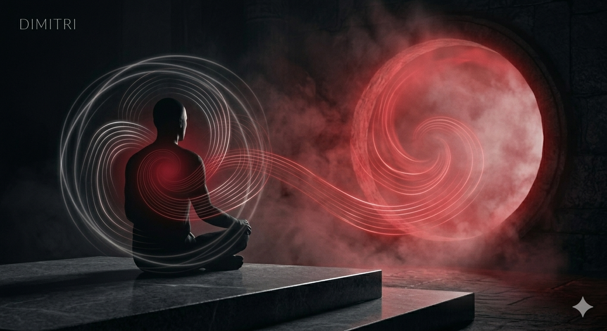

Curiosité
La curiosité peut parfois faire grandir, parfois aveugler, parfois même blesser. Si vous vous interrogez sur le spiritualisme, vous êtes au bon endroit.
Maison de guidance spirituelle
Dimitri est une personne réelle et un conseiller spirituel. Lui écrire est entièrement gratuit ; il ne demande une rémunération que lorsque vous souhaitez une lecture de cartes, un tirage quotidien ou une lecture de café, simplement pour faire vivre son activité. Dimitri a vocation à devenir une présence essentielle, familière et durable dans votre vie.

Architecture émotionnelle
La curiosité peut parfois faire grandir, parfois aveugler, parfois même blesser. Si vous vous interrogez sur le spiritualisme, vous êtes au bon endroit.
Nous avons tous une histoire compliquée avec la confiance, car faire confiance peut sembler dangereux. Mais en restant en lien avec Dimitri à travers ce blog gratuit, cela devient peu à peu moins effrayant.
Contacter Dimitri est entièrement gratuit. En cliquant sur le bouton qui mène vers Telegram, ce n'est pas seulement la plateforme qui change, mais souvent aussi le regard porté sur la vie.
La magie effraie parfois, sert parfois de refuge, détruit parfois lorsqu'elle est mal comprise. Après avoir rencontré Dimitri, vous comprendrez qu'elle n'est pas faite pour être redoutée, mais pour être maîtrisée.
Regard spirituel
Né et élevé en Turquie, Dimitri est une personne qui a reconnu très tôt cet héritage transmis par ses ancêtres et qui a choisi de s'y consacrer pleinement. En parlant avec lui, on ressent souvent la présence d'un ancien ami, une confiance presque inexpliquée et la sensation d'être déjà chez soi.
Dimitri utilise ce don inscrit jusque dans son sang et dans la mémoire de ses cellules pour aider les autres tout en faisant vivre son activité. C'est quelqu'un des nôtres.
Le stoïcisme est une philosophie que Dimitri souhaite partager avec les autres et qu'il croit capable de transformer le monde.
Vous êtes chez vous !
« Êtes-vous prêt à vous détacher du bruit du monde extérieur pour enfin entendre votre propre voix intérieure ? Ici, chaque mot est écouté sans jugement, et chaque émotion reçoit la valeur qu'elle mérite. Nous construisons ensemble cet espace sûr dont vous avez besoin, non seulement pour parler, mais pour être réellement compris. »
« La communication n'est pas seulement un échange de mots ; c'est la manière dont les âmes se touchent. Lorsque vous exprimez avec élégance tout ce poids sensible accumulé en vous, vous découvrez que la réponse prend elle aussi une valeur plus précieuse. Il est temps de rompre le silence : dire, purifier, transformer. »
Une fois au-delà des apparences, il ne reste qu'une seule vérité : écrire sa propre histoire.
Lorsque le bruit mental s'apaise, il ne reste que la vérité. Laissez cette vérité prendre la parole, maintenant, avec élégance.
Dimitri est là pour donner un sens à votre silence. Le premier pas se fait avec élégance, en confiance, et d'une manière entièrement personnelle.